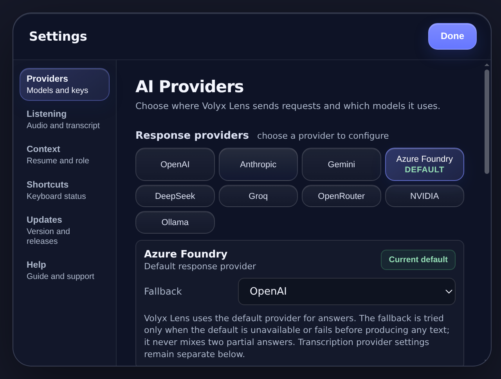
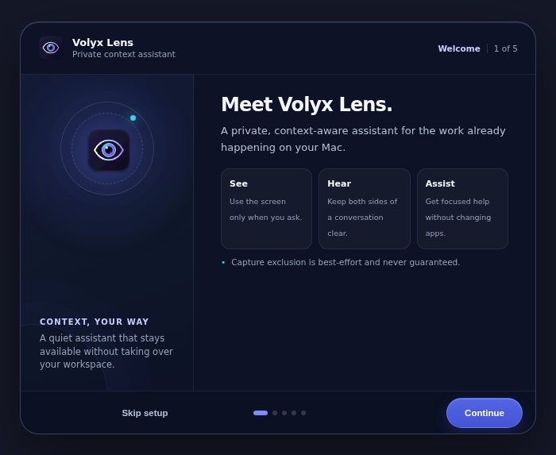

Provider credentials use Electron secure storage backed by the operating system: macOS Keychain, Windows DPAPI, Linux libsecret. If secure storage is unavailable, keys are kept in memory for the session only and are never written to disk; Settings says so.
A private assistant for your desktop.
One panel for your screen, your voice, and the meeting audio you choose. The context goes to your provider, not through ours.
Windows and Linux builds are live in v0.7.7, and unsigned macOS DMGs are attached to the release; the README gives the first-launch steps. The macOS build will be signed with an Apple Developer ID and notarized once release signing credentials are configured. Bring your own provider key.
Context aperture
Ready
Selected context
Screen + microphone
Your provider
An example control. This page captures nothing.
12response providers
0Volyx Lens relay servers
3separate context inputs
1compact desktop rail
Three inputs. One deliberate send.
The screen, your microphone, and the other side of a call stay separate. You decide which of them an answer is allowed to use.
Screen
Pick the display holding the work. A screenshot is attached only when the request needs one.
Selected
You
Your microphone is its own channel, so the app never confuses you with the other side of the call.
Live
Them
System audio is optional and independent. Turn it on for a meeting, leave it off for a quiet task.
Optional
Provider
Selected context goes directly to the provider you configured, under that provider's terms.
DirectTask Context holds multiple selected screens in local memory. A later request uses a bounded visual window and discloses omitted screens; the live transcript and Task Context are memory-only, within fixed size limits, and cleared when the session ends.
There is no Volyx Lens-operated intermediary server in that request path.
Your computer
Selected context
Screen · You · Them
Your choice
AI provider
Your key · your terms
No Volyx Lens cloud relay sits between the app and the provider. There is no queue, no copy, and no Volyx Lens account in the request path; the provider receives the selected context and applies its own terms.
A short route, on the record.
The parts that carry your context are visible, bounded, and yours to switch.
There is no advertising or analytics SDK in the app. The only network calls are the provider and transcription requests you configure.
Twelve response providers, one workflow. Change the model behind an answer without moving your screen, your notes, or your meeting history.
The rail shows what is listening and which context is armed. Hiding the panel does not leave a silent background listener behind.
The only periodic request is the update check: while notifications are on, the app asks GitHub Releases for the newest version shortly after launch, every six hours, and once shortly after the machine wakes if six hours passed while it slept. Those requests necessarily carry your IP address, the updater's user agent, a random updater ID stored on this device, and the platform-specific update channel. Turning notifications off in Settings → Updates stops the scheduled check.
At the edge until you need it.
The panel docks anywhere, expands into the conversation, and collapses to a rail when the task is done.
Choose a response provider and a fallback once. A failed primary falls through before it has produced text, so two partial answers are never blended.

What it does with the context you give it.
Five explicit actions. No background prompts, no automatic answers, no hidden watcher.
-
Screen and coding help
Ask about an error, a dense document, a dashboard, or an unfamiliar interface without restating what is visible.
-
Task Context across screens
Save multiple selected screens in local memory and send a bounded visual window that names what it left out.
-
You/Them conversation help
Separate transcript channels power reply suggestions and follow-up questions during a permitted meeting.
-
Meeting recaps and history
Save a meeting on this device, search it later, export it, and generate structured notes from the saved transcript.
-
One compact rail
Expand for a conversation, collapse to a rail, and hide it without stopping the session.

Twelve response providers.
No forced route. Model availability and charges come from those providers, not Volyx Lens.
Response providers
- OpenAIresponses + transcription
- Anthropicresponses
- Google Geminiresponses + batch transcription
- Azure Foundryresponses + realtime transcription
- DeepSeekresponses
- Groqresponses + Whisper
- OpenRouterresponses
- NVIDIAresponses
- Ollamalocal responses
- Opencodelocal responses
- Opencode Gohosted responses
- Custom (OpenAI-compatible)any compatible endpoint
Transcription only
- Deepgramrealtime
- Azure AI Speechrealtime
Realtime transcription runs on OpenAI, Azure Foundry, Deepgram, or Azure AI Speech. Batch transcription falls back to OpenAI, Google Gemini, or Groq Whisper. Local Whisper ships in the Windows and Linux packages (macOS packages cannot bundle one, so there it works only when a whisper-server binary is configured). Automatic cloud fallback remains off by default.
Put the lens on your desktop.
Bring your own key. Keep the context. Switch providers whenever you want.
Choose your operating system below; every build is served from GitHub Releases with its SHA-256 checksum attached.
Windowsx64 NSIS installer · v0.7.7Recommended for this device
macOSUnsigned v0.7.7 · choose your chip
macOS · Apple SiliconUnsigned v0.7.7 DMG
macOS · IntelUnsigned v0.7.7 DMG
Linux · x64AppImage · v0.7.7
Linux · arm64AppImage · v0.7.7
Version 0.7.7 publishes the Windows installer, Linux AppImages, and unsigned macOS DMGs for Apple Silicon and Intel. Windows and Linux builds ship unsigned; every file has a .sha256 checksum, a CycloneDX SBOM is attached per platform and architecture. On macOS, clear the quarantine flag with the xattr command in the installation steps; right-click → Open also works on most versions.
What's new in v0.7.7
- Opencode, Opencode Go, and custom OpenAI-compatible endpoints are available as response providers.
- Meeting history starts on for new installs; existing profiles keep their current setting.
- The update button opens the latest release when this build cannot update in place.
- Helper binaries are validated before launch, and the audit and test gates are hardened.
Useful context still needs judgment.
Capture permissions are explicit, but local consent and recording laws still apply. Do not capture private conversations, protected work, exams, or interviews when you lack permission.
Capture exclusion is best-effort. On macOS the app asks the system to keep its window out of captures; on Windows 10 2004 or later it uses WDA_EXCLUDEFROMCAPTURE. Linux has no capture-exclusion API, so the window can appear in screen shares there, and newer macOS capture paths or a physical camera can still record it anywhere. Never rely on it to bypass disclosure, supervision, proctoring, or security controls.
Source code is available under the Apache License 2.0.
A few direct answers.
The parts people ask before installing: storage, signatures, offline use, and what the app keeps.
Does Volyx Lens operate its own AI backend?
No. You configure your own supported provider. Requests travel from the desktop app to that provider, and the provider's own data terms apply.
Where are API keys stored?
The app uses Electron secure storage backed by the operating system (macOS Keychain, Windows DPAPI, Linux libsecret) when available. If secure storage is unavailable, keys are kept in memory for the session only and are never written to disk; Settings says so and lets you update or remove them. They must be entered again after a restart.
Is the release notarized?
The v0.7.7 macOS DMGs attached to the release are unsigned, so macOS blocks a plain double-click. Drag Volyx Lens into Applications, then run xattr -cr "/Applications/Volyx Lens.app" once in Terminal, or right-click the app and choose Open. If macOS says the app is damaged, that Terminal command is what clears it. The macOS build will be signed with an Apple Developer ID and notarized once release signing credentials are configured. The Windows and Linux builds ship unsigned; every file has a .sha256 checksum, a CycloneDX SBOM is attached per platform and architecture, and Windows shows a SmartScreen "Unknown publisher" warning.
What works offline?
AI responses require a configured provider; with a local Ollama server they run fully offline. Realtime transcription uses your configured provider (OpenAI, Azure Foundry, Deepgram, or Azure AI Speech), and Local Whisper covers offline batch transcription and ships in the Windows and Linux packages (macOS packages cannot bundle one, so there it works only when a whisper-server binary is configured); automatic cloud fallback remains off by default.
Can Volyx Lens detect and save meetings?
Yes. Meeting detection is opt-in; meeting history is on by default for new installs. While listening, meeting detection looks for a sustained two-sided conversation between the Mic and System channels, then tags the session locally with a "Meeting in progress" indicator. With meeting history on, saved meetings get a meeting badge and stay searchable; you can export records, transcripts, or generated meeting notes. Detection runs in-session. Saved history stays on this device and Volyx Lens never uploads it; generating notes or cleaning a saved transcript does send that transcript to the provider you configured.
Can I choose the transcription language?
Yes. The settings screen lets you pick a language for transcription or leave it on auto-detect. Language selection is honored per job and normalized for both cloud providers and the optional local Whisper provider.
Can I use it commercially?
Yes. The public source is licensed under the Apache License 2.0, which permits commercial use, modification, and redistribution.